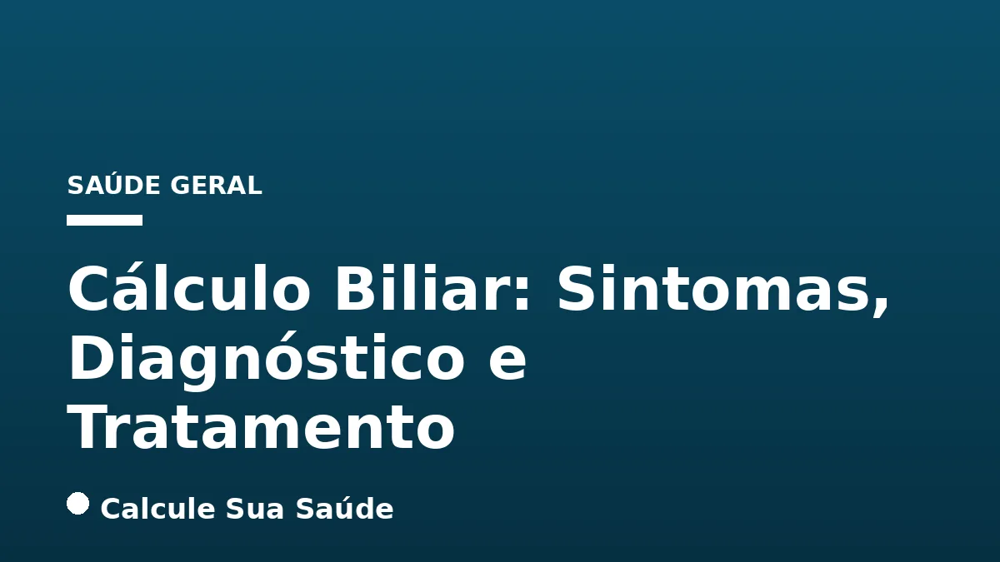

Aviso médico importante
Este conteúdo é educativo e informativo e não substitui a consulta, o diagnóstico ou o tratamento de um profissional de saúde. Em caso de sintomas, procure orientação médica.
Índice do Artigo
- 1. O Que São Cálculos Biliares? Definição e Tipos
- 2. Como os Cálculos Biliares Se Formam: Fisiopatologia
- 3. Fatores de Risco para o Desenvolvimento de Cálculos Biliares
- 4. Sintomas do Cálculo Biliar: Quando a Pedra Causa Problemas
- 5. Diagnóstico Preciso do Cálculo Biliar
- 6. Prevenção do Cálculo Biliar: Estratégias Baseadas em Evidências
- 7. Opções de Tratamento para Cálculos Biliares: Abordagens Atuais
- 8. Colecistectomia: A Solução Cirúrgica Definitiva
- 9. Manejo da Coledocolitíase e Colangite Aguda
- 10. Complicações Associadas ao Cálculo Biliar
- 11. Mitos Comuns vs. O Que a Ciência Diz sobre Cálculo Biliar
- 12. Cálculos Biliares: Dados Epidemiológicos no Brasil
- 13. Considerações Finais e Importância do Acompanhamento Médico
- 14. Perguntas frequentes
O cálculo biliar, popularmente conhecido como pedra na vesícula, ou tecnicamente como colelitíase, representa uma condição de saúde digestiva significativa que afeta milhões de pessoas em todo o mundo, incluindo uma parcela considerável da população brasileira. Caracteriza-se pela formação de depósitos endurecidos de substâncias digestivas, primariamente colesterol e bilirrubina, dentro da vesícula biliar, um pequeno órgão localizado sob o fígado.
A vesícula biliar desempenha um papel crucial no sistema digestório, atuando como um reservatório e concentrador da bile, um fluido essencial para a emulsificação e digestão de gorduras no intestino delgado. Quando a composição da bile se desequilibra ou a motilidade da vesícula é comprometida, essas substâncias podem cristalizar e formar os cálculos, que variam em tamanho e quantidade.
Embora muitos indivíduos com cálculos biliares permaneçam assintomáticos, a presença dessas formações pode levar a quadros de dor intensa e complicações sérias, exigindo intervenção médica. Este artigo aprofundará nos aspectos fundamentais do cálculo biliar, desde suas causas e fatores de risco até as opções de diagnóstico e tratamento mais eficazes, sempre com base em evidências científicas.
Em resumo
- Cálculos biliares são depósitos endurecidos na vesícula biliar, majoritariamente de colesterol (75-80%) ou pigmentos (bilirrubina).
- Fatores de risco incluem gênero feminino, idade avançada, obesidade, perda de peso rápida, dieta inadequada, histórico familiar e diabetes.
- Muitos casos são assintomáticos; quando há sintomas, a dor abdominal intensa (cólica biliar) após refeições gordurosas é o mais comum.
- O diagnóstico é feito principalmente por ultrassonografia abdominal, complementado por outros exames de imagem e sangue.
- A prevenção envolve manter peso saudável, dieta equilibrada, atividade física regular e evitar jejuns prolongados.
- O tratamento padrão-ouro para cálculos sintomáticos é a colecistectomia (remoção cirúrgica da vesícula biliar), geralmente por videolaparoscopia.
1. O Que São Cálculos Biliares? Definição e Tipos
Os cálculos biliares, ou colelitíase, são formações sólidas que se desenvolvem na vesícula biliar, um órgão pequeno e em forma de pera situado abaixo do fígado. A principal função da vesícula é armazenar e concentrar a bile, um líquido produzido pelo fígado que auxilia na digestão das gorduras.
Esses cálculos podem variar significativamente em tamanho, desde pequenos grãos de areia até o tamanho de uma bola de golfe, e uma pessoa pode ter um único cálculo ou múltiplos. A formação ocorre devido a um desequilíbrio na composição química da bile, levando à cristalização e solidificação de seus componentes.
Tipos Principais de Cálculos Biliares
Existem dois tipos principais de cálculos biliares, diferenciados por sua composição:
- Cálculos de Colesterol: Representam a maioria dos casos (cerca de 75% a 80%). Geralmente de cor amarela, são formados quando há excesso de colesterol não dissolvido na bile. Isso pode ocorrer porque o fígado secreta colesterol em demasia ou porque a bile não contém sais biliares suficientes para dissolvê-lo.
- Cálculos Pigmentados: Menos comuns, são tipicamente marrons ou pretos. Formam-se quando a bile contém um excesso de bilirrubina, um pigmento resultante da quebra das hemácias. Estão frequentemente associados a condições como doenças hemolíticas, cirrose, infecções do trato biliar ou doenças da árvore biliar.
Quando esses cálculos bloqueiam os ductos biliares, impedindo o fluxo normal da bile, podem surgir complicações e sintomas característicos.
2. Como os Cálculos Biliares Se Formam: Fisiopatologia
A formação de cálculos biliares é um processo complexo que envolve a alteração da composição da bile e/ou da motilidade da vesícula biliar. A bile é composta por água, sais biliares, colesterol, bilirrubina, fosfolipídios e proteínas. Um desequilíbrio nessas concentrações é o ponto de partida para a litogênese.
No caso dos cálculos de colesterol, o principal mecanismo é a supersaturação da bile com colesterol. Isso significa que a quantidade de colesterol na bile excede a capacidade dos sais biliares e fosfolipídios de mantê-lo em solução. O colesterol então precipita, formando cristais que se aglomeram e crescem, dando origem aos cálculos.
Além da supersaturação, a hipomotilidade da vesícula biliar também contribui. Se a vesícula não se contrai adequadamente para esvaziar a bile, esta permanece estagnada por mais tempo, aumentando a chance de cristalização. A presença de muco e proteínas na bile pode atuar como um núcleo para a formação dos cristais.
Para os cálculos pigmentados, o excesso de bilirrubinato de cálcio não conjugado na bile é o fator chave. Isso pode ser resultado de condições que aumentam a produção de bilirrubina (como doenças hemolíticas) ou de infecções bacterianas na árvore biliar que desconjugam a bilirrubina, tornando-a menos solúvel e mais propensa a precipitar.
3. Fatores de Risco para o Desenvolvimento de Cálculos Biliares
Diversos fatores podem aumentar a probabilidade de uma pessoa desenvolver cálculos biliares. Compreender esses fatores é crucial para a prevenção e para a identificação de indivíduos em risco.
- Gênero Feminino: Mulheres têm o dobro de chances de desenvolver cálculos biliares em comparação com homens. Isso se deve, em grande parte, às flutuações hormonais, especialmente o estrogênio, que pode aumentar a secreção de colesterol na bile e diminuir a motilidade da vesícula. Gravidez e o uso de anticoncepcionais hormonais também são fatores contribuintes.
- Idade Avançada: O risco aumenta progressivamente com a idade, sendo mais comum em pessoas acima dos 60 anos, com predominância a partir da quinta década de vida.
- Obesidade e Sobrepeso: O excesso de peso é um fator de risco significativo, pois aumenta a secreção de colesterol na bile, favorecendo a formação de cálculos de colesterol. Para entender mais sobre como o peso afeta a saúde metabólica, veja nosso artigo sobre Colesterol e Triglicerídeos: Guia Completo.
- Perda de Peso Rápida: Dietas muito restritivas ou cirurgias bariátricas que levam a uma perda de peso acelerada podem aumentar o risco. Isso ocorre porque o fígado libera colesterol extra e a contração da vesícula biliar diminui.
- Dieta: Uma dieta rica em gorduras saturadas e carboidratos refinados, e pobre em fibras, está associada a um risco maior. Alimentos ultraprocessados, por exemplo, podem contribuir para esse desequilíbrio. Saiba mais em Alimentos Ultraprocessados: Riscos e Identificação.
- Histórico Familiar: A predisposição genética desempenha um papel importante, indicando que a condição pode ter um componente hereditário.
- Diabetes: Pessoas com diabetes, especialmente o tipo 2, são mais propensas a desenvolver cálculos biliares devido a alterações no metabolismo da glicose e dos lipídios. Para aprofundar, consulte Diabetes Tipo 2: Controle e Reversão.
- Sedentarismo: A falta de atividade física regular pode contribuir para o aumento do risco, influenciando o controle do peso e o metabolismo. Os benefícios da atividade física são vastos, como explorado em Caminhada: Benefícios para a Saúde e Quantos Passos Diários.
- Jejum Prolongado: Ficar muitas horas sem comer faz com que a bile fique estagnada na vesícula, favorecendo a cristalização do colesterol.
- Hemólise Crônica: Condições que causam a destruição excessiva de hemácias aumentam a produção de bilirrubina, elevando o risco de cálculos pigmentados.
- Doenças Intestinais: Cirurgias ou doenças que afetam a porção final do intestino delgado (como a doença de Crohn) podem prejudicar a absorção de sais biliares, alterando a composição da bile.
4. Sintomas do Cálculo Biliar: Quando a Pedra Causa Problemas
É fundamental destacar que muitos indivíduos com cálculos biliares são assintomáticos, ou seja, não apresentam qualquer sintoma. Nesses casos, os cálculos são frequentemente descobertos incidentalmente durante exames de imagem realizados por outras razões. No entanto, quando os sintomas se manifestam, geralmente indicam que um cálculo está bloqueando um ducto biliar, levando a um quadro conhecido como cólica biliar.
Principais Sintomas da Cólica Biliar
- Dor Abdominal Intensa (Cólica Biliar): Este é o sintoma mais característico. A dor é súbita e intensa, localizada tipicamente no quadrante superior direito do abdômen ou na parte central, logo abaixo do esterno. Pode irradiar para o ombro direito ou para as costas, entre as escápulas. Geralmente surge após refeições ricas em gordura e pode durar de alguns minutos a várias horas.
- Náuseas e Vômitos: Frequentemente acompanham a dor abdominal, especialmente após a ingestão de alimentos gordurosos.
- Inchaço Abdominal (Distensão Abdominal): Sensação de plenitude ou inchaço na região abdominal.
- Indigestão, Gases e Sensação de Estufamento: Sintomas dispépticos que podem ser confundidos com má digestão comum.
- Perda do Apetite: Devido ao desconforto e às náuseas.
- Gosto Amargo na Boca e Dores de Cabeça: Sintomas menos específicos, mas que podem estar presentes.
Sinais de Complicações
A presença de outros sintomas pode indicar complicações mais graves, que exigem atenção médica imediata:
- Febre e Calafrios: Podem ser um sinal de inflamação ou infecção da vesícula biliar (colecistite aguda) ou dos ductos biliares (colangite).
- Icterícia: Amarelamento da pele e dos olhos, que ocorre quando os cálculos bloqueiam os ductos biliares, impedindo o fluxo de bile para o intestino e causando acúmulo de bilirrubina no sangue.
- Fezes Claras e Urina Escura: Também são indicativos de obstrução biliar, pois a bilirrubina não chega ao intestino para dar cor às fezes e é eliminada em maior quantidade pela urina.
É crucial procurar atendimento médico se você apresentar dor abdominal intensa e persistente, febre, calafrios ou icterícia, pois esses podem ser sinais de uma emergência médica.
5. Diagnóstico Preciso do Cálculo Biliar
O diagnóstico de cálculos biliares é fundamentalmente baseado em exames de imagem, que permitem visualizar a vesícula biliar e a presença de cálculos. A avaliação clínica dos sintomas e o histórico do paciente também são componentes importantes.
Exames de Imagem
- Ultrassonografia Abdominal: É o exame mais comum, acessível, não invasivo e considerado o padrão-ouro para detectar cálculos na vesícula biliar. Permite avaliar o tamanho, a quantidade e a localização dos cálculos, bem como a espessura da parede da vesícula e a presença de dilatação dos ductos biliares.
- Ultrassonografia Endoscópica (EUS): Em alguns casos, especialmente para identificar cálculos menores que podem não ser visíveis na ultrassonografia abdominal ou para avaliar os ductos biliares, a EUS pode ser utilizada. Um endoscópio com um transdutor de ultrassom na ponta é inserido no trato digestivo.
- Colangiopancreatografia por Ressonância Magnética (CPRM ou MRCP): Este exame de ressonância magnética oferece uma visão detalhada da vesícula biliar e de toda a árvore biliar (ductos biliares e pancreáticos) sem a necessidade de radiação ionizante ou contraste intravenoso. É excelente para detectar cálculos nos ductos biliares (coledocolitíase).
- Tomografia Computadorizada (TC): Embora menos sensível que a ultrassonografia para detectar cálculos de colesterol, a TC pode ser útil para identificar complicações como inflamação da vesícula (colecistite) ou pancreatite, e para descartar outras causas de dor abdominal.
- Colangiopancreatografia Retrógrada Endoscópica (CPRE ou ERCP): Este é um procedimento endoscópico que combina endoscopia e raios-X. Um endoscópio é inserido até o duodeno, e um cateter é avançado para os ductos biliares e pancreáticos, onde um corante é injetado para visualização em raios-X. A CPRE é tanto diagnóstica quanto terapêutica, permitindo a remoção de cálculos dos ductos biliares durante o mesmo procedimento.
Exames Laboratoriais
Exames de sangue são frequentemente solicitados para avaliar a função hepática e pancreática, e para identificar sinais de inflamação ou infecção:
- Bilirrubina: Níveis elevados podem indicar obstrução biliar.
- Enzimas Hepáticas (ALT, AST, Fosfatase Alcalina, GGT): Podem estar alteradas em casos de obstrução ou inflamação.
- Amilase e Lipase: Níveis elevados podem sugerir pancreatite aguda, uma complicação dos cálculos biliares.
- Hemograma Completo: Pode indicar infecção (leucocitose).
6. Prevenção do Cálculo Biliar: Estratégias Baseadas em Evidências
Embora a predisposição genética e outros fatores não modificáveis contribuam para o risco de cálculos biliares, diversas estratégias de estilo de vida podem ajudar a reduzir a probabilidade de sua formação. A prevenção foca principalmente na manutenção de um peso saudável e em hábitos alimentares adequados.
- Manter um Peso Saudável: Evitar o sobrepeso e a obesidade é uma das medidas mais eficazes, pois o excesso de peso aumenta a secreção de colesterol na bile.
- Evitar Dietas Radicais e Perda de Peso Muito Rápida: A perda de peso acelerada, especialmente mais de 1,5 kg por semana, pode aumentar o risco de formação de cálculos. Opte por uma perda de peso gradual e sustentável, com acompanhamento profissional.
- Ter uma Dieta Saudável e Equilibrada:
- Consumir Alimentos Ricos em Fibras: Inclua frutas, vegetais, cereais integrais e leguminosas na sua dieta. As fibras ajudam a regular o trânsito intestinal e podem influenciar o metabolismo do colesterol. Para mais informações sobre a importância das fibras, consulte Fibras Alimentares: Tipos, Quantidade e Impacto na Saúde.
- Evitar Gorduras Saturadas e Carboidratos em Excesso: Reduza o consumo de alimentos processados, embutidos, frituras e doces.
- Ingerir Gorduras Saudáveis: Inclua fontes de gorduras mono e poli-insaturadas, como azeite de oliva, óleo de abacate, nozes e sementes, com moderação.
- Adotar Padrões Alimentares Saudáveis: A Dieta Mediterrânea: A Mais Recomendada para a Saúde é um excelente exemplo de padrão alimentar que pode beneficiar a saúde geral e reduzir o risco de várias doenças, incluindo cálculos biliares.
- Praticar Atividades Físicas Regularmente: A atividade física ajuda no controle do peso, melhora o metabolismo das gorduras e da insulina, e contribui para a saúde geral.
- Manter uma Boa Hidratação: Beber bastante água é essencial para a saúde geral e para a composição da bile.
- Fazer Refeições Regulares e Evitar Longos Períodos em Jejum: O jejum prolongado pode levar à estase biliar, aumentando o risco de formação de cálculos. Refeições regulares estimulam a contração da vesícula e o fluxo da bile.
7. Opções de Tratamento para Cálculos Biliares: Abordagens Atuais
O tratamento para cálculos biliares é determinado pela presença e gravidade dos sintomas, bem como pela ocorrência de complicações. A abordagem terapêutica varia desde a observação até a intervenção cirúrgica.
Cálculos Assintomáticos
A maioria das pessoas com cálculos biliares que não causam sintomas não necessitará de tratamento imediato. Nesses casos, o médico pode recomendar o acompanhamento para monitorar os cálculos e a possível aparição de sintomas. A cirurgia profilática (preventiva) pode ser considerada em situações muito específicas, como em pacientes com vesícula de porcelana (um tipo de calcificação da parede da vesícula com risco aumentado de câncer), ou em pacientes com cálculos muito grandes e fatores de risco adicionais, mas é uma decisão individualizada que avalia os riscos e benefícios da cirurgia versus a observação.
Cálculos Sintomáticos e Complicações
Para pacientes que apresentam sintomas ou complicações, o tratamento é geralmente necessário.
- Medicamentos para Dissolver Cálculos Biliares: Medicamentos orais, como o ácido ursodesoxicólico, podem ser utilizados para tentar dissolver cálculos pequenos de colesterol. No entanto, este tratamento é demorado (pode levar meses ou anos), nem sempre é eficaz (especialmente para cálculos maiores ou pigmentados), e os cálculos podem reaparecer após a interrupção. É uma opção reservada para pacientes que não podem ser submetidos à cirurgia devido a outras condições de saúde.
- Cirurgia (Colecistectomia): É o tratamento padrão-ouro e mais eficaz para pacientes com colelitíase sintomática. A cirurgia envolve a remoção completa da vesícula biliar e dos cálculos.
- CPRE com Extração de Cálculos: Se os cálculos estiverem localizados nos ductos biliares (coledocolitíase), eles podem ser removidos por meio da Colangiopancreatografia Retrógrada Endoscópica (CPRE). Este procedimento permite a visualização e a remoção dos cálculos por via endoscópica. Em casos de colangite aguda obstrutiva (infecção dos ductos biliares), o tratamento com antibióticos deve ser iniciado imediatamente, além da desobstrução.
8. Colecistectomia: A Solução Cirúrgica Definitiva
A colecistectomia, a remoção cirúrgica da vesícula biliar, é o tratamento mais comum e eficaz para pacientes com cálculos biliares sintomáticos ou complicações. É um dos procedimentos cirúrgicos mais realizados em todo o mundo.
Tipos de Colecistectomia
- Colecistectomia Videolaparoscópica: Esta é a técnica mais utilizada atualmente. É um procedimento minimamente invasivo, realizado através de pequenas incisões no abdômen. Um laparoscópio (um tubo fino com uma câmera) e instrumentos cirúrgicos são inseridos para visualizar e remover a vesícula biliar. As vantagens incluem menor dor pós-operatória, menor tempo de internação, recuperação mais rápida e cicatrizes menores. A maioria dos pacientes retorna às suas atividades normais em poucas semanas.
- Colecistectomia Aberta: Em casos mais complexos, como inflamação grave, aderências extensas, complicações intraoperatórias inesperadas, ou quando a videolaparoscopia não é tecnicamente viável, pode ser necessária uma cirurgia convencional com uma incisão maior no abdômen. Embora a recuperação seja mais longa, a cirurgia aberta ainda é uma opção segura e eficaz quando indicada.
O Que Acontece Após a Remoção da Vesícula?
Após a colecistectomia, o organismo continua a produzir bile no fígado. A diferença é que, sem a vesícula biliar para armazená-la e concentrá-la, a bile flui diretamente do fígado para o intestino delgado. A maioria das pessoas se adapta bem a essa mudança e não apresenta problemas digestivos significativos a longo prazo. No entanto, alguns pacientes podem experimentar:
- Diarreia: Pode ocorrer em alguns indivíduos, especialmente após refeições ricas em gordura, devido ao fluxo contínuo e menos concentrado de bile para o intestino. Geralmente é temporária e pode ser controlada com ajustes dietéticos.
- Dificuldade na Digestão de Gorduras: Embora a digestão de gorduras continue, alguns pacientes podem ter mais dificuldade com grandes quantidades de gordura.
É importante seguir as orientações médicas pós-operatórias e, se necessário, fazer ajustes na dieta para otimizar a digestão.
9. Manejo da Coledocolitíase e Colangite Aguda
A coledocolitíase refere-se à presença de cálculos nos ductos biliares, que são os canais que transportam a bile do fígado para o intestino delgado. Esta condição é mais grave que a colelitíase (cálculos na vesícula) porque a obstrução dos ductos biliares pode levar a complicações sérias, como icterícia, pancreatite aguda e colangite aguda.
Coledocolitíase
Quando um cálculo da vesícula migra para o ducto biliar comum e o obstrui, pode causar dor intensa, icterícia (amarelamento da pele e olhos), urina escura e fezes claras. O diagnóstico é frequentemente confirmado por exames como a CPRM ou a ultrassonografia endoscópica (EUS).
O tratamento da coledocolitíase geralmente envolve a remoção do cálculo do ducto biliar. A técnica mais comum para isso é a Colangiopancreatografia Retrógrada Endoscópica (CPRE). Durante a CPRE, um endoscópio é inserido pela boca até o duodeno, e um cateter é avançado para o ducto biliar. O médico pode então realizar uma esfincterotomia (pequeno corte no esfíncter de Oddi) para alargar a abertura do ducto e usar uma cesta ou balão para extrair o cálculo. Em alguns casos, pode ser necessário colocar um stent para manter o ducto aberto.
Colangite Aguda
A colangite aguda é uma infecção bacteriana grave dos ductos biliares, geralmente precipitada pela obstrução causada por cálculos biliares. É uma emergência médica que se manifesta com a tríade de Charcot: febre, dor no quadrante superior direito do abdômen e icterícia. Em casos mais graves, pode evoluir para a pêntade de Reynolds, que inclui os sintomas de Charcot mais hipotensão e confusão mental.
O tratamento da colangite aguda exige uma abordagem imediata e agressiva:
- Antibioticoterapia: O tratamento com antibióticos de amplo espectro deve ser iniciado o mais rápido possível para combater a infecção.
- Desobstrução Biliar: A remoção da obstrução é crucial para permitir o fluxo da bile e eliminar o foco da infecção. Isso é frequentemente realizado por CPRE, mas em algumas situações, pode ser necessária uma drenagem biliar percutânea ou cirúrgica.
A não tratamento da coledocolitíase e da colangite aguda pode levar a complicações fatais, como sepse e falência de múltiplos órgãos.
10. Complicações Associadas ao Cálculo Biliar
Embora muitos cálculos biliares sejam assintomáticos, a presença dessas formações pode levar a diversas complicações sérias se não forem gerenciadas adequadamente. A gravidade das complicações varia e algumas podem ser emergências médicas.
- Colecistite Aguda: É a inflamação da vesícula biliar, geralmente causada por um cálculo que obstrui o ducto cístico (o ducto que drena a bile da vesícula). Os sintomas incluem dor intensa e persistente no quadrante superior direito do abdômen, febre, náuseas e vômitos. Pode levar à necrose da parede da vesícula e perfuração se não tratada.
- Pancreatite Biliar Aguda: Ocorre quando um cálculo biliar migra e obstrui o ducto pancreático, que se une ao ducto biliar comum antes de desaguar no intestino. Isso causa inflamação do pâncreas, resultando em dor abdominal intensa (frequentemente irradiando para as costas), náuseas, vômitos e febre. É uma condição potencialmente grave.
- Colangite Aguda: Já discutida, é a infecção bacteriana dos ductos biliares, geralmente secundária à obstrução por cálculos. É uma emergência médica com risco de sepse.
- Fístula Colecistoentérica e Íleo Biliar: Em casos raros, a inflamação crônica ou aguda da vesícula pode levar à formação de uma fístula (conexão anormal) entre a vesícula e o intestino. Um cálculo grande pode então passar para o intestino e causar uma obstrução intestinal, conhecida como íleo biliar.
- Câncer de Vesícula Biliar: Embora raro, a presença de cálculos biliares, especialmente cálculos grandes ou múltiplos, e a inflamação crônica da vesícula (colecistite crônica) são fatores de risco para o desenvolvimento de câncer de vesícula biliar. A vesícula de porcelana, uma calcificação da parede da vesícula, é um fator de risco ainda maior.
A vigilância e o tratamento adequado dos cálculos biliares sintomáticos são essenciais para prevenir essas complicações.
11. Mitos Comuns vs. O Que a Ciência Diz sobre Cálculo Biliar
Existem muitos equívocos sobre o cálculo biliar que podem gerar confusão e ansiedade. É importante desmistificar essas ideias com base em evidências científicas.
Mito 1:
12. Cálculos Biliares: Dados Epidemiológicos no Brasil
O cálculo biliar é uma condição de saúde pública relevante no Brasil, com uma prevalência significativa na população adulta. A compreensão desses dados epidemiológicos é fundamental para o planejamento de estratégias de saúde e para a conscientização da população.
Fator Prevalência/Característica no Brasil População Adulta Afetada Estimada em 20% a 30% (aproximadamente 20 milhões de brasileiros) Gênero Maior no sexo feminino (prevalência em mulheres a partir da quinta década de vida) Idade Aumenta com a idade, predominando acima dos 40 ou 50 anos Estudos de Autópsias Prevalência de 7,8% (5,3% em mulheres, 3,9% em homens) Litíase Vesicular Assintomática 14,7% em mulheres em um serviço de ultrassonografia em Ribeirão Preto, SP Distribuição Regional Região Sudeste se destaca por maior número de casos e procedimentos cirúrgicos Esses dados reforçam a importância de campanhas de prevenção e de acesso a serviços de diagnóstico e tratamento em todo o território nacional. A alta prevalência, especialmente em mulheres e com o avanço da idade, sublinha a necessidade de atenção contínua a essa condição.
13. Considerações Finais e Importância do Acompanhamento Médico
O cálculo biliar, ou pedra na vesícula, é uma condição prevalente que, embora frequentemente assintomática, pode levar a quadros de dor intensa e complicações graves. A compreensão de seus mecanismos de formação, fatores de risco, sintomas e opções de tratamento é essencial para a gestão eficaz da doença.
É crucial enfatizar que as informações apresentadas neste artigo têm caráter educativo e não substituem a consulta, o diagnóstico ou o tratamento médico profissional. Qualquer suspeita de cálculo biliar ou a manifestação de sintomas deve ser prontamente avaliada por um médico, que poderá indicar os exames necessários e o plano de tratamento mais adequado para cada caso.
A prevenção, através de um estilo de vida saudável, controle de peso e dieta equilibrada, desempenha um papel fundamental na redução do risco. Para aqueles que já possuem cálculos, o acompanhamento médico regular é vital para monitorar a condição e intervir precocemente se os sintomas ou complicações surgirem. A medicina baseada em evidências oferece soluções eficazes para o cálculo biliar, garantindo a melhor qualidade de vida possível aos pacientes.
14. Perguntas frequentes
O que causa a formação de cálculos biliares?
A formação de cálculos biliares ocorre devido a um desequilíbrio na composição da bile (excesso de colesterol ou bilirrubina) ou à diminuição da motilidade da vesícula biliar, que favorece a cristalização dessas substâncias.Quais são os principais sintomas de pedra na vesícula?
O sintoma mais comum é a dor abdominal intensa (cólica biliar) no quadrante superior direito ou centro do abdômen, que pode irradiar para o ombro direito ou costas, geralmente após refeições gordurosas. Náuseas, vômitos e inchaço também são frequentes.Como é feito o diagnóstico de cálculo biliar?
O diagnóstico é primariamente feito por ultrassonografia abdominal, que é o padrão-ouro. Outros exames como CPRM, TC e exames de sangue podem ser utilizados para confirmar a presença de cálculos e avaliar possíveis complicações.Cálculos biliares assintomáticos precisam de tratamento?
Na maioria dos casos, cálculos assintomáticos não necessitam de tratamento imediato, sendo recomendado o acompanhamento médico. A cirurgia profilática pode ser considerada em situações muito específicas e individualizadas, como alto risco de complicações.Qual é o tratamento mais eficaz para cálculos biliares sintomáticos?
O tratamento padrão-ouro para cálculos biliares sintomáticos é a colecistectomia, a remoção cirúrgica da vesícula biliar. Atualmente, a técnica mais utilizada é a videolaparoscópica, minimamente invasiva.É possível viver sem a vesícula biliar?
Sim, é perfeitamente possível viver sem a vesícula biliar. Após a remoção, a bile flui diretamente do fígado para o intestino delgado. A maioria das pessoas se adapta bem, embora algumas possam precisar de ajustes dietéticos para evitar diarreia ou desconforto digestivo com gorduras.Quais são os fatores de risco para desenvolver cálculos biliares?
Os principais fatores de risco incluem ser mulher, idade avançada, obesidade, perda de peso rápida, dieta rica em gordura e carboidratos, histórico familiar, diabetes, sedentarismo e jejum prolongado.A dieta pode prevenir a formação de pedras na vesícula?
Sim, uma dieta saudável e equilibrada, rica em fibras, com consumo moderado de gorduras saudáveis e evitando gorduras saturadas e carboidratos em excesso, pode ajudar a reduzir o risco de formação de cálculos biliares.Leia também
Referências e Fontes
1. Vale Saúde. Cálculo Biliar - O que É, Sintomas e Tratamento. 2025. Disponível em: vertexaisearch.cloud.google.com
2. Yashoda Hospitals. A Complete Guide to Gallstones. 2023. Disponível em: yashodahospitals.com
3. Dr. Fabricio Coelho. Cálculos Biliares: como prevenir e tratar?. 2023. Disponível em: vertexaisearch.cloud.google.com
4. Centro Radiológico. Cálculos na vesícula biliar: como é o diagnóstico e quais tratamentos são mais indicados. 2023. Disponível em: centroradiologico.med.br
5. Dr. Alexandre Coutinho. Cálculo Biliar: fatores de risco e sintomas. 2022. Disponível em: dralexandrecoutinho.com.br
6. DASA. Pedra na vesícula. Disponível em: nav.dasa.com.br
7. Mayo Clinic. Gallstones. Disponível em: vertexaisearch.cloud.google.com
8. BMJ Best Practice. Gallstones. Disponível em: bestpractice.bmj.com